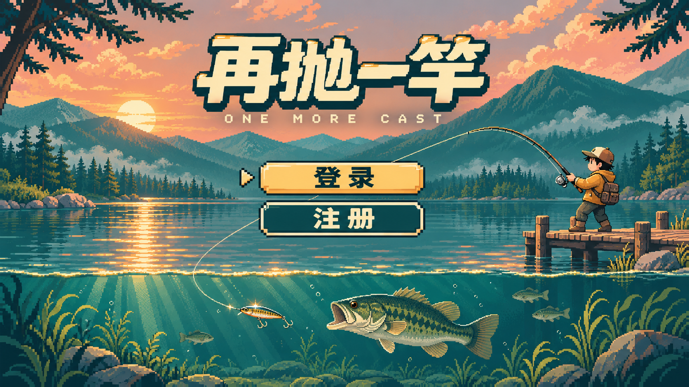
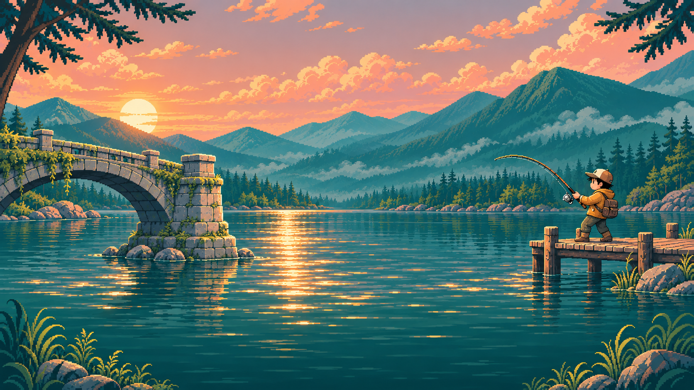
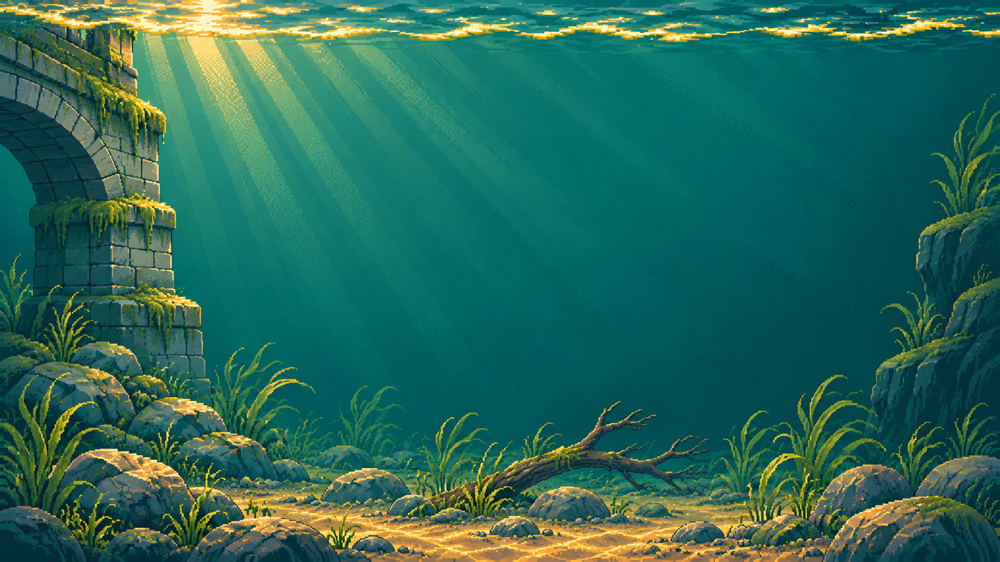
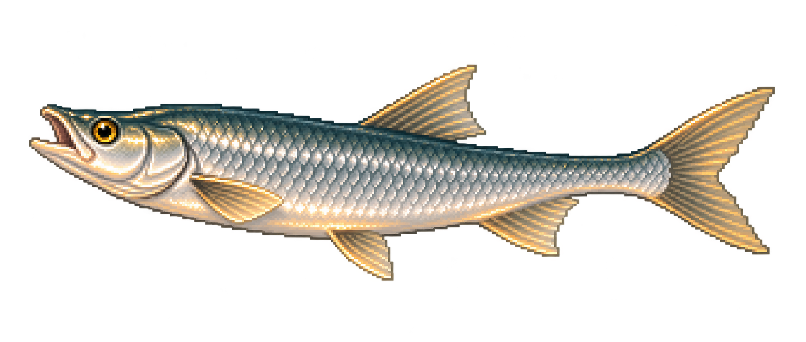

横屏游玩，更能看清湖面与标点


再抛一竿 · 本机试玩存档
取个名字，记住你在这片湖的收获。
试玩存档仅保存在此浏览器，无需邮箱或密码。
一根竿 · 一枚米诺 · 一尾翘嘴
按住空格蓄力，力度约 2/3、精度指针靠近正中时松手。目标 36 米，落点越准，鱼的攻击欲上限越高。
选择「匀速」，按住空格收线；每 2～3 秒按 J 抽竿，接着松开空格停半秒。匀收、抽停的节奏会诱发攻击。
按住收线拉近鱼，张力高时松手。看见「准备冲刺」就放线，冲刺结束再收。张力爆表会切线，过松太久会脱钩。
空格：蓄力 / 收线 J 或 ↑：抽竿 1 / 2 / 3：速度 R：重开 Esc：暂停触屏：按住主按钮，点「抽竿」；切到其他窗口会自动暂停。
暮色湖的第一份回应

翘嘴